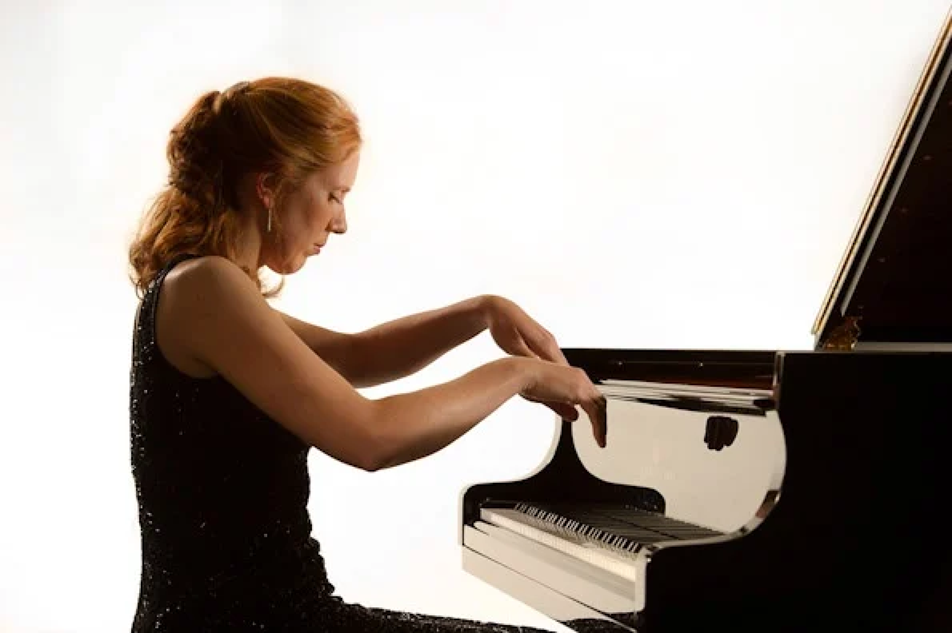

La plupart des gens n’ont pas la chance d’avoir été inscrits par leurs parents, dès leur plus jeune âge, à des cours de piano. Vous non plus, vous n’avez pas eu cette chance, et vous vous êtes toujours dit que vous rattraperiez un jour le temps perdu et que vous apprendriez à jouer de cet instrument à cordes frappées qui vous a toujours fasciné ? Mais entre votre vie familiale et votre activité professionnelle, vous avez laissé filer les années et maintenant vous vous dîtes qu’il est trop tard pour prendre des cours et que de toute façon que vous n’y arriverez jamais ? Tout est question de motivation !
Il n’y a évidemment pas d’âge pour s’asseoir sur un tabouret et poser ses mains sur un superbe clavier alternant touches blanches et noires. Il faut cependant être conscient que cet enseignement requiert une grande implication de la part de l’élève et que comme toujours en matière de musique, il n’y a pas de miracle pour apprendre le piano, la régularité du travail et les heures d’entraînement sont incontournables pour progresser. A moins d’être un génie de la musique comme il en existe quelques-uns dans l’Histoire.
On a l’habitude de dire que tous les apprentissages sont plus faciles pour les enfants, car leur cerveau est plus apte que celui de leurs aînés à emmagasiner de nouvelles connaissances de façon rapide. C’est une réalité scientifique qu’il serait vain de nier. Mais est-ce que cela est une bonne raison pour renoncer à tout nouveau projet de cours dès que l’on a dépassé vingt ans ? Certainement pas, et figurez-vous qu’il y a même des avantages à se lancer dans des leçons de musique en tant qu’adulte.
En effet, la motivation ne viendra que de la personne concernée, et pas des parents comme c’est parfois le cas pour certains enfants. Cela garantit une motivation plus constante dans la durée et une meilleure attention durant les leçons. Un adulte sera également plus en mesure d’organiser son planning de façon à ménager des temps de pratique réguliers pour faire ses gammes et autres exercices de lecture de partitions. Voilà donc d’excellentes raisons de se lancer dans l’aventure, pourvu que l’on puisse y consacrer du temps et que l’on soit prêt à persévérer, car jouer du piano est loin d’être facile et le découragement peut vite l’emporter sur l’envie. Il ne reste plus qu’à trouver la bonne organisation et le bon prof.
C’est une question qui revient souvent chez les personnes qui hésitent à se lancer dans des cours. Et cette question est souvent teintée d’inquiétude, car comme chacun sait, le solfège, qui permet d’aborder la théorie musicale, de lire des partitions et d’écrire de la musique, est une discipline complexe et souvent perçue comme ennuyeuse pour le débutant. Il existe cependant deux écoles.
C’est une question qui revient souvent chez les personnes qui hésitent à se lancer dans des cours. Et cette question est souvent teintée d’inquiétude, car comme chacun sait, le solfège, qui permet d’aborder la théorie musicale, de lire des partitions et d’écrire de la musique, est une discipline complexe et souvent perçue comme ennuyeuse pour le débutant. Il existe cependant deux écoles.
Mais certains n’envisagent que d’apprendre leurs airs de jazz ou de rock favoris, et il faut reconnaître qu’il est possible d’y parvenir sans maîtriser la lecture de notes. Le musicien doit alors développer une oreille redoutable qui va lui permettre d’analyser à l’écoute, de reproduire et de créer. Bien entendu, cela ne concerne qu’une minorité de pianistes, et la plupart des profs refuseront de se lancer dans cette voie. Par contre, nombre d’entre eux optent désormais pour un enseignement mixte avec dès le début avec beaucoup de clavier pour apporter un aspect ludique et concret qui entretient la motivation de l’élève.
0 Commentaires